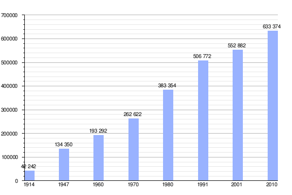

⭐Historia
Prehistoria y Pueblos indígenas 🧉
Inmediatamente antes de la llegada de los españoles este territorio estaba habitado por diferentes pueblos que llegarían a ser conocidos colectivamente como "puelches" ("orientales" en mapudungún) o como «patagones», y que posteriormente fueron englobadas dentro del «complejo tehuelche». En la zona andina habitaban puelches, poyas y un grupo nómade lacustre que los españoles denominaron "pegüenches" y podría haber estado relacionado con los denominados "pehuenches antiguos". Aunque otros grupos Mapuches desde hace miles de años habitan el actual territorio de la provincia de Río Negro
Época Colonial🧉
Se entiende que Hernando de Magallanes fue el primer europeo en recorrer sus costas, en 1520. En 1670, el padre Nicolás Mascardi estableció la Misión del Nahuel Huapi a orillas de ese lago. Posteriormente hubo otros emprendimientos religiosos. En 1779 Francisco de Viedma y Narváez fundó Mercedes de Patagones uno de los Establecimientos Patagónicos directamente gobernados por el Virreinato del Río de la Plata creado menos de un año antes.
Confirmación y organización del Estado Argentino.🧉
En 1881 se firmó el tratado de límites entre la Argentina y Chile que aseguró definitivamente la posesión argentina de los territorios de la Patagonia Oriental. La Gobernación de la Patagonia fue luego dividida por la ley N.º 1265 del 24 de octubre de 1882, creándose La Gobernación de La Pampa, siendo el límite entre ambas los cursos de los ríos Agrio, Neuquén y Negro, quedando el actual territorio rionegrino dividido entre las dos gobernaciones.
Territorio Nacional del Río Negro🧉
Los proyectos de provincialización de los Territorios Nacionales - 1884- que comenzaron a enviarse al Congreso desde la década de 1910, quedaron sometidos al veredicto de las provincias fundadoras que entonces integraban la base del Estado nacional Por la ley N.º 1532 del 16 de octubre de 1884, se crearon los Territorios Nacionales dividiendo las Gobernaciones de La Pampa y de la Patagonia, entre ellos el Territorio Nacional del Río Negro, estableciéndose por primera vez Río Negro como una jurisdicción territorial separada. Por decreto del 6 de mayo de 1885 se dividió el Territorio del Río Negro en siete departamentos, denominados I, II, III, IV, V, VI y VII. Estos departamentos recibieron nuevos nombres por el decreto del 19 de mayo de 1904. Por decreto del 20 de octubre de 1915, los departamentos fueron elevados a trece.
⭐División Administrativa
Territorialmente Río Negro se encuentra dividida en trece departamentos, y estos en distritos:
- Adolfo Alsina (Viedma)
- Avellaneda (Choele Choel)
- Bariloche (San Carlos de Bariloche)
- Conesa (General Conesa)
- El Cuy (El Cuy)
- General Roca (General Roca)
- Nueve de Julio (Sierra Colorada)
- Ñorquincó (Ñorquincó)
- Pichi Mahuida (Río Colorado)
- Pilcaniyeu (Pilcaniyeu)
- San Antonio (San Antonio Oeste)
- Valcheta (Valcheta)
- Veinticinco de Mayo (Maquinchao)
Los departamentos incluyen a su vez áreas de gobierno local, denominadas municipios o comisiones de fomento, según el caso. Estas utilizan el sistema de ejidos no colindantes, por lo que existen territorios no organizados en los espacios entre ellos.
⭐Población
Según Censo nacional 2010 la población era de 638 645 habitantes.
Gráfica de evolución demográfica de Río Negro entre 1914 y 2010

Con más de 100 000 habitantes
Con más de 50 000 habitantes
- Cipolletti
- Viedma(Capital)
Con más de diez mil habitantes
- Villa Regina
- Allen
- Cinco Saltos
- San Antonio Oeste
- El Bolsón
- Catriel
- Río Colorado
- Choele Choel
- Sierra Grande
- Ingeniero Jacobacci
- Ingeniero Huergo
Con más de siete mil habitantes
⭐Política
La provincia de Río Negro, fue durante más de 28 años un bastión del radicalismo a nivel nacional. Desde que la Argentina recuperó la democracia en el año 1983, en la provincia se han acontecido una sucesión de gobiernos pertenecientes a la Unión Cívica Radical. Este fenómeno perduró hasta el año 2011, donde el radicalismo perdió el poder en manos del Frente para la Victoria, liderado a nivel nacional por Cristina Fernández de Kirchner.
El 10 de diciembre de 2011 asumió la gobernación el abogado Carlos Soria, de Frente Grande, quien había cumplido dos mandatos consecutivos como intendente de la ciudad de General Roca. En la madrugada del 1 de enero de 2012 fue asesinado por su esposa, Susana Freydoz, y es reemplazado en el cargo por el vicegobernador, hasta el término del mandato.
En 2015 Alberto Weretilneck fue reelecto, cumpliendo su mandado hasta el año 2019; habiendo ejecutado un gran programa de infraestructura; el Plan Castello.
En el año, 2019 fue elegida la primera gobernadora procedente de Bariloche, la sra. Arabela Carreras, ministra de turismo en el período anterior.
| Período | Gobernador | Partido |
|---|---|---|
| 1983-1987 | Osvaldo Álvarez Guerrero | Unión Cívica Radical - UCR |
| 1987-1991 | Horacio Massaccesi | Unión Cívica Radical - UCR |
| 1991-1995 | Horacio Massaccesi | Unión Cívica Radical - UCR |
| 1995-1999 | Pablo Verani | Alianza por la Patagonia (UCR-PPR-MID-PDC) |
| 1999-2003 | Pablo Verani | Alianza para el Trabajo, la Justicia y la Educación (UCR-FrePaSo) |
| 2003-2007 | Miguel Saiz | Concertación para el Desarrollo (UCR-MID) |
| 2007-2011 | Miguel Saiz | Concertación para el Desarrollo (UCR-MID) |
| 2011-2015 | Carlos Soria / Alberto Weretilneck | Frente para la Victoria - FpV |
| 2015-2019 | Alberto Weretilneck | Juntos Somos Río Negro |
| 2019-2023 | Arabela Carreras | Juntos Somos Río Negro |